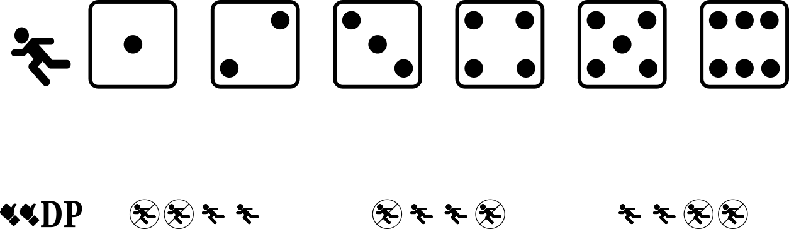

Extended play summary 
P# - Pop-out

- the ball is popped up and caught by the infielder indicated by the number on the die
- the batter is out and the runners do not advance
FO/FC - Force-out and Fielder's choice

- the ball is fielded by the infielder indicated by the number on the die
- the batter and all runners advance one base
- the number on the die is associated with a single out as indicated, listing in priority order the base at which the first runner is found and called out
 ,
,  , and
, and  indicate “1B”
indicate “1B”
- the batter arriving at first base is called out and is scored as being forced out
- other runners that have advanced one base are safe
- a runner arriving at home scores a run
 indicates “2B”, and “1B”
indicates “2B”, and “1B”
- a base runner arriving at second base is called out and the batter is scored as reaching first base on a fielder’s choice
- if there is no runner arriving at second base, the batter arriving at first base is called out and is scored as being forced out
 indicates "3B", “2B”, and “1B”
indicates "3B", “2B”, and “1B”
- a base runner arriving at third base is called out and the batter is scored as reaching first base on a fielder’s choice
- if there is no runner arriving at third base, a base runner arriving at second base is called out and the batter is scored as reaching base on a fielder’s choice
- if there is no runner arriving at second base, the batter arriving at first base is called out and is scored as being forced out
 indicates “H”, “3B”, “2B”, and “1B”
indicates “H”, “3B”, “2B”, and “1B”
- a base runner arriving at home is called out and the batter is scored as reaching first base on a fielder’s choice
- if there is no base runner arriving at home, a base runner arriving at third base is called out and the batter is scored as reaching base on a fielder’s choice
- if there is no runner arriving at third base, a base runner arriving at second base is called out and the batter is scored as reaching base on a fielder’s choice
- if there is no runner arriving at second base, the batter arriving at first base is called out and is scored as being forced out
F# - Fly-out

- the ball is fielded by the outfielder associated with the number on the die
- the batter is out
- for all rolls of the die if there are less than two out, a runner at third base reaches home and the run is scored
- if the ball is fielded by the right fielder, indicated by or , a runner at second base reaches third base
- otherwise, runners at second base and first base remain at their base
DP - Double play

Plays


- a fly out to an outfield fielder

- a pop-out to an infield fielder


- a strike out on a swinging strike


- a strike out on a looking strike (no swing)


- a fly out to an outfield fielder


- a pop-out to an infield fielder

- a strikeout with a swinging strike


- a sacrifice fly (fly-out to an outfield fielder)
- a runner at third base successfully crosses home plate for a run